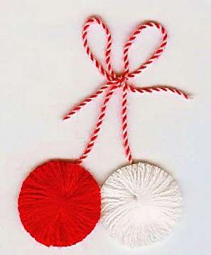

Борис Акунин
Мой календарь
1 января, в середине зимы, начинать год, согласитесь, странно. В древности поступали логичнее: праздновали новый год 1 марта. Потому что ушла зима, природа начинает просыпаться, снова жизнь.
«Мартовский стиль» (так это называется) пришел на Русь с христианством - был позаимствован у Византии вместе с летоисчислением от Сотворения Мира, которое, как рассчитали теологи, произошло за 5508 лет до рождества Христова.
С 1 марта год на Руси отсчитывался несколько веков, и крестьянам было понятно, почему.
Я не к тому, чтобы вы не отмечали первое января - конечно, отмечайте. И тринадцатое января, и китайский новый год. Чем больше праздников, тем лучше.
Просто настоятельно рекомендую не пренебрегать и мартовским стилем.
С новым семь тыщ пятьсот очередным годом вас! Пируйте, желайте друг другу всего самого чудесного. С особенной торжественностью отмечайте первое марта, если январь и февраль нового года вам не понравились. Считайте, что они не считаются и сегодня вы берете второй старт.
Наряжайтесь в красное и белое, чтобы весь год быть красивыми (так делают болгары, поэтому они все красивые).
С новым годом! С новым счастьем!